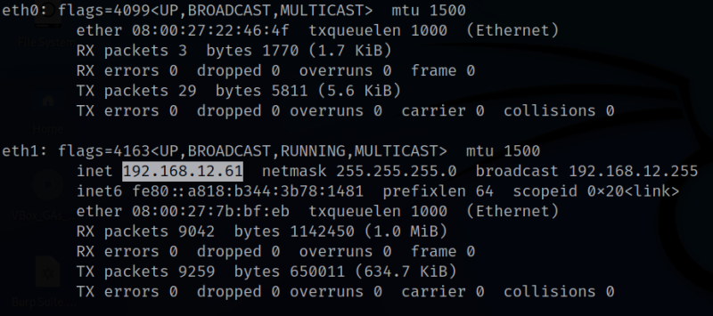

Pam
▸ Pam
▸ 2. Finding Services and Ports
▸ 3.1 FTP
Difficulty: Medium.
Flag: 2 flags.
Learning:
• Reconnaissance
Scan Network
Find services
• Enumerate
FTP
• Exploitation
PHP Reverse Shell
Run the exploit
Get an user
Decode base64 data
• Privilege Escalation
Run the “feh” file to get “root”
Decode an “Openssl” encrypted text
• Download (Mirror): https://downloads.hackmyvm.eu/pam.zip
Install the machine on VirtualBox:
1. Download the file and extract it.
2. On Virtualbox choose File->Import Appliance.
3. Select the file “ova”.
4. Accept to import.

Watch your Machine IP.
$ ifconfigOutput:

Diagram